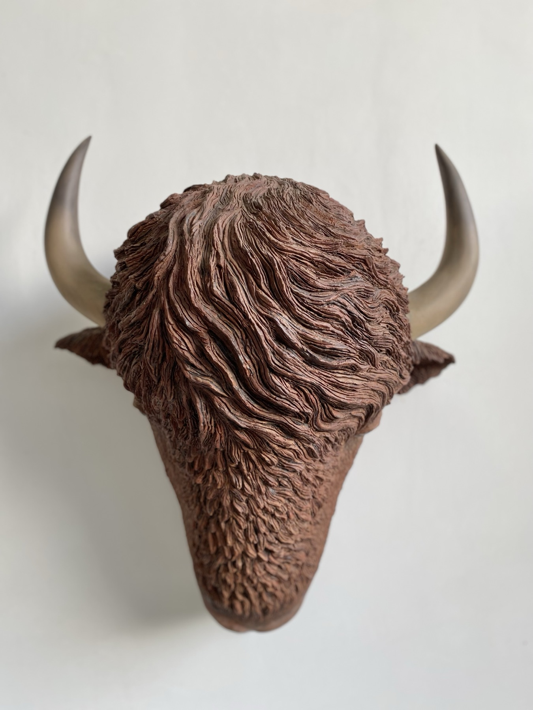
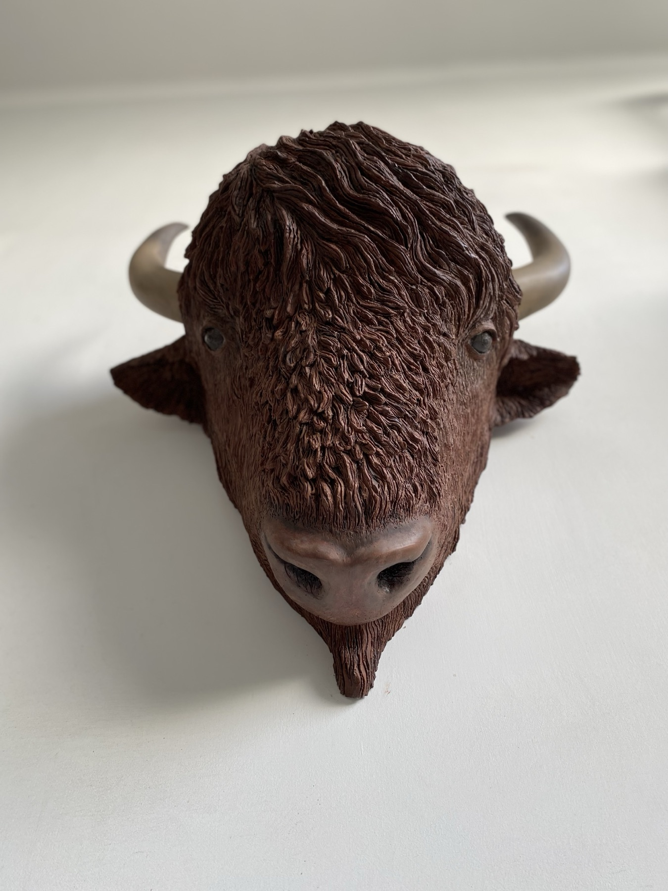
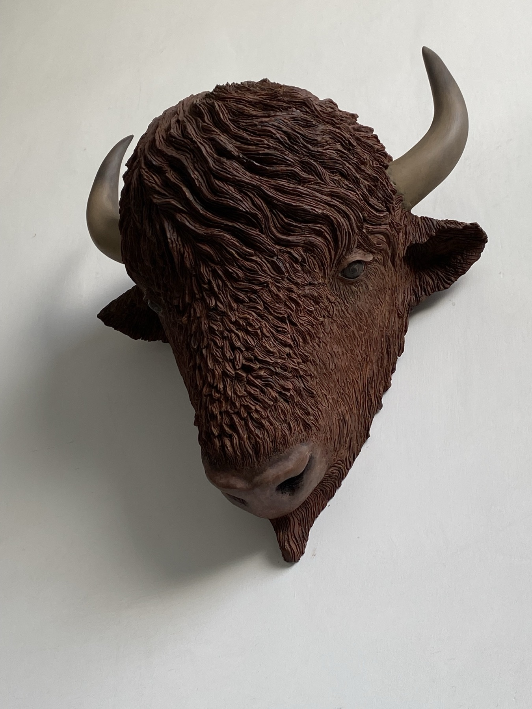
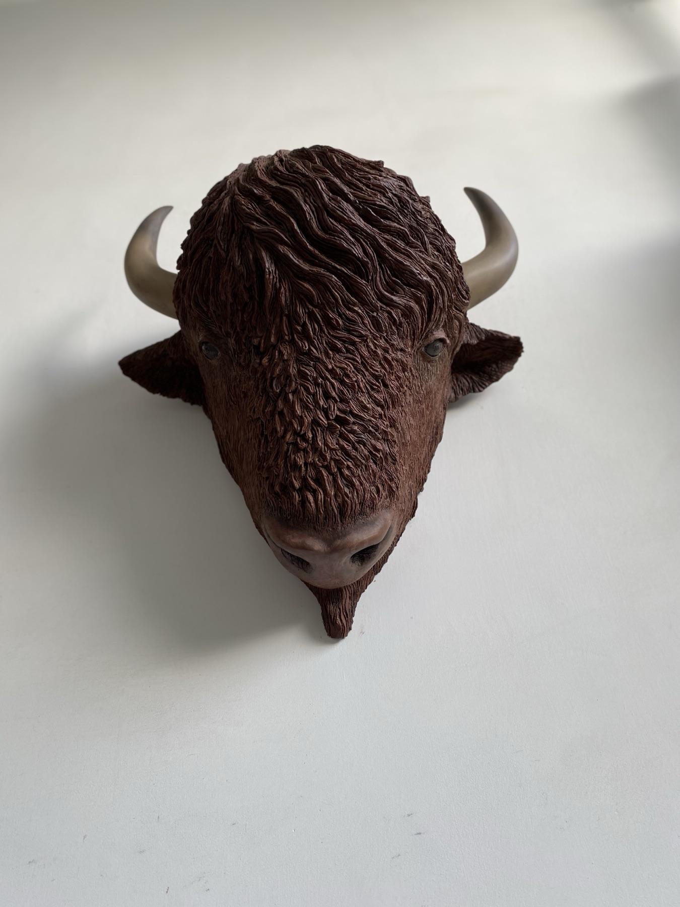
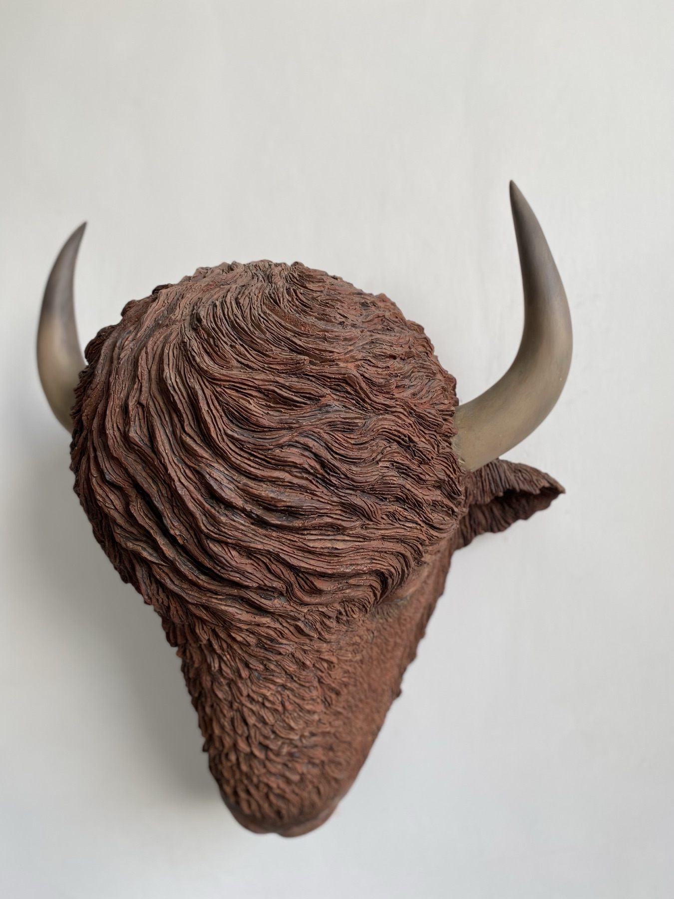
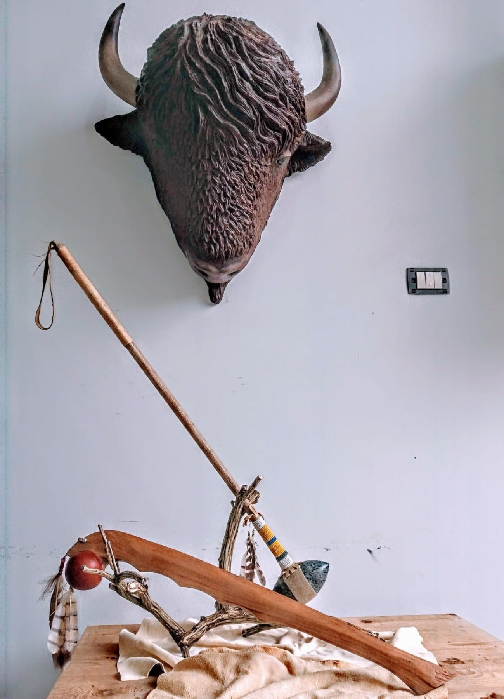

Diario · 31 ottobre 2021
Testa di Bisonte in terracotta
Guarda la mia video-spiegazione:
Descrizione:
Ciao, amante dell’arte!
Oggi voglio parlarti di una mia opera d’arte fatta nel lontano 2011. Da vero appassionato degli Indiani d’America, ho voluto rappresentare, utilizzando esclusivamente terracotta, la testa di un bisonte (americano, non europeo!). Puoi immaginare, oltre al peso della scultura, l’enorme lavoro per svuotare, modellare e scolpire la terracotta.
Il Bisonte Americano ha vari tratti caratteristici: gli occhi (sempre completamente neri), il colore della pelliccia, il naso ecc.. Una cosa però che ho voluto fortemente rappresentare sono stati i crini sulla parte superiore della fronte che vengono mossi dal vento. Nella zona del muso invece ricreato peluria e barbetta caratteristica!
Passiamo alle corna del bisonte che, nella realtà, hanno forme “particolari“. Esse non sono infatti propriamente dritte. Sono stato capace di rendere questo effetto andando a curvare un pochino le corna verso l’estremità. Ed ora, risponderò alla domanda fatidica che tutti mi fanno quando contemplano la mia opera: “Maurizio, ma quanto pesa?!”
Beh, stiamo sicuramente parlando di almeno 20KG, ma sono sicuro che sono molti di più. E non sto nemmeno considerando tutta la struttura, creata sempre dal sottoscritto, che lo sorregge. Spero che questo pezzo della mia collezione privata ti sia piaciuto, di seguito ti lascio alcune foto della scultura. Fammi sapere cosa ne pensi con un commento qua sotto! Oppure contattami se sei interessato all’acquisto di altri pezzi.





